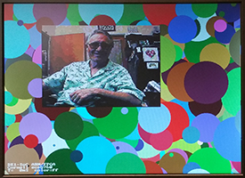

General procedure for connecting EBAB:
.ebab_video_in_external_interface_address (connected-to-ebab_video_in_external_interface_address), .ebab_video_in_external_interface_byte_enable (connected-to-ebab_video_in_external_interface_byte_enable), .ebab_video_in_external_interface_read (connected-to-ebab_video_in_external_interface_read), .ebab_video_in_external_interface_write (connected-to-ebab_video_in_external_interface_write), .ebab_video_in_external_interface_write_data (connected-to-ebab_video_in_external_interface_write_data), .ebab_video_in_external_interface_acknowledge (connected-to-ebab_video_in_external_interface_acknowledge), .ebab_video_in_external_interface_read_data (connected-to-ebab_video_in_external_interface_read_data)
-- External bus to Avalon Bridge
Student generated modules will need to be Avalon bus-slaves when controlled by the HPS, but under some conditions will need to be bus-masters. For instance, building a module which writes directly to the VGA interface would require a bus-master ability. The first example uses the University Progam External Bus to Avalon Bridge (EBAB) module as a bus-master which addresses either the LEDs or the HEX display to display numbers set on the toggle switches, and with a write-enable using ~KEY[0]. The HPS C-code reads and displays the SW and KEY peripherials. The Qsys layout has just the HPS, parallel ports for the LEDs, HEX display, switches, and buttons, and the EBAB module. The LEDs and HEX display are hooked to the
external-to-avalon
master. The SW and KEY are hooked to the HPS h2f_lw_axi_master. (top-level, hex decoder, project ZIP). This code ignores the Avalon ACK bit and does not read any data.
-- Controlling the bus-master from the HPS
In the second example, the HPS uses a keyboard command interface to choose the HEX or LED device address which is used by the EBAB. The FPGA side has a small state machine which counts time and uses the EBAB to display the count on the HEX or LED devices. The state machine also handles the bus-write setup and waits for the Avalon bus ACK. The Qsys layout converts the switch PIO into an output getting data from the HPS light-weight bus. This new output is used for the device address by the EBAB. (top-level, project ZIP). This example is a model of how a hardware computational unit might be controlled by the HPS and interact with other bus-attached peripherials. The bus transaction from EBAB to HEX display PIO takes two cycles (write, ACK). I tested up to 100 MHz state machine rate, for a bus rate of 50 million/sec.
--
The logical sequence is: A C-program outputs a bus address to the h2f_lw_axi_master address (of the ARM) which is mapped to a PIO unit on the Avalon bus. The PIO unit exports the address value to the FPGA fabric, which also contains the EBAB. The EBAB uses the address (from the PIO) to set its own write address back onto the Avalon bus.
-- Multiple bus-masters to one bus-slave
The Qsys bus generator constructs arbitration hardware for various configurations of masters and slaves. I wanted to test the operation of multiple bus-masters talking to one bus-slave. The previous example was extended to have two EBAB units, one controlled as before with its bus address controlled by a C program. The other was set to always write to the HEX display. The phase of the write-clock was set up so that they write at different times. Each bus-master counts at different rates. The counts are displayed on the HEX displays and for bus-master one, on the LEDs, when chosen. The Qsys layout shows that both the EBAB masters connect to the HEX display. (top-level, project ZIP).
--
A modification of the top-level module changes the bus request rate to 3.1 MHz, uses the SW input to set the delay between bus write-requests, and puts the two write-requests and the two ACK bits on the GPIO_0 port for view on an oscilloscope. If the separation is zero and addresses are set to the same bus_slave, then one write-request is stretched to two cycles (top trace) while the bus is busy with the other. If two different bus-slaves are addressed by the two bus-masters, or the time between write-requests is one cycle or more, then there is no collision and the write-requests are each one state-machine cycle long. Synchronization in the bus-master state machines depends on reading the ACK bits returned from the Avalon bus. Which write-request actually gets stretched, when they are on the same cycle, seems to be randomly determined by race-conditions.
-- VGA display bus_master with HPS/FPGA mixed graphics source
A bus-master to control video display is useful for many projects. Interfacing to the University video suite is challanging because the documentation is scattered or non-existant. The Qsys layout shows the connections to the bus-master at the bottom. You can see in the Qsys layout that both SDRAM and on-chip RAM are used. Both are necessary, but I am not sure how they are related. The interface I finally came up with can write pixels at about 6.1 megapixels/sec, at 640x480 resolution. I had to phase-lock the write cycle to the VGA_BLANK_N signal to avoid confilct with the VGA read cycle. I am not sure why the HPS program does not need to do that. The demo hardware writes a large blue rectangle a the top of the screen (as a background for text drawn by the HPS), then a slowly moving, 8-bit color map, then a diagonal line, and leaves a space at the bottom of the screen for a rectangle drawn by the HPS. The Avalon bus handles contention between the HPS and my bus-master so that graphics from the FPGA fabric can be merged with HPS graphics by simply writing the pixels. In this example, the text overlay is controlled only by the HPS. (top-level module, project ZIP, test image). There is a slight VGA sync artifact on this version.
--
Changing one line of code eliminates the sync artifact, but lowers the write rate to 2.8 megapixels/sec. The condition for starting a write operation goes from
if (state==0 && ~VGA_BLANK_N) begin
to
if (state==0 && (~VGA_VS | ~VGA_HS)) begin
making the start condition tighter and leaving a little slack before the next VGA read so that it does not contend with the second cycle of the write. The problem occurs because the blanking interval end is tested on the first write-cycle, but the write process takes two cycles, thus overlapping the first VGA read, whereas the vertical and horiztal sync pulses are narrower.
-- If we could make the write condition less restricitve, but still shorter than the blanking pulse we could recover much of the write rate, but avoid the sync jitter artifact. By detecting the start of the vertical and horizontal sync pulses we can stretch the pulses to get the performance back up to over 6 megapixels/second. A revised top-level module does this with stable sync performance.
-- VGA display bus_master with FPGA graphics state machine source
In this example, the display bus-master gets pixel color information from a true dual-port, M10K block, RAM based state machine. The graphics are trivial vertical lines, with x position chosen by the DE1-SoC switches and the color by two of the push buttons. Pushing button zero loads the switch and button information to the drawing state machine which populates M10K RAM with the 2-bit pixel colors for the line. The bus-master state machine moves all the pixels in the M10K RAM to VGA display memory by converting the two-bit M10K state to 8-bit color and putting the data on the Avalon bus. Since the M10K RAM is dual ported, the line-writing state machine and bus_master state machine can access memory at the same time. In general for high performance, you would not want to draw every pixel every time like this example does. (top-level module, ZIP)
-- VGA display of video input using a bus_master to copy input image

A modified Qsys layout (see also University Computer page, Video input from NTSC to on-chip-memory, then to VGA using HPS ) adds a bus_master which can read from the on-chip SRAM used to store the video input and write to the VGA buffer SDRAM which is also connected to the VGA controller. The pixel copy state machine runs at 50 MHz, so a clock bridge was added to drive the the EBAB module. Video input is enabled by SW[1] up, Copy from the input buffer to the VGA display is enabled by SW[0] (may need to press KEY[0] to reset), and a HPS progam must be run to set up the video input and demonstrate sumultaneous access to VGA from the HPS and custom bus_master. The VGA buffer bus traffic, plus video-input to VGA bus traffic, plus HPS to VGA bus traffic can exceed the bus bandwidth. The writing rate of the HPS program and the video-input to VGA are throttled. This version of the code has the screen position of the input image hard-coded, but the buffer can be resized and moved to other screen locations. (top-level, ZIP, HPS code).
-- VGA display using a bus_master as a GPU for the HPS. Display from SDRAM.
A simple GPU was written that only writes rectangles. It takes corners (x1,y1 and x2,y2) and colors from the HPS in SRAM scratchpad memory and displays them into SDRAM-buffered VGA. The SDRAM is therefore shared between the HPS, the GPU bus_master, and the VGA controller in Qsys. The SRAM scratchpad is shared between the HPS and the GPU bus_master. The HPS is attached to SRAM scratchpad using Qsys, but the bus_master is attached in the FPGA fabric, not in Qsys. The bus_master state machine reads five values from the scratchpad, then drops into a loop until both x,y exceed their limits. The loops includes a write operation to the bus (4 cycles), plus a delay to allow the VGA controller to access SDRAM. With a 50 MHz state clock, eight wait states are required in the delay to avoid video artifacts. The number of wait-states can be set using the upper four switches from 0 to 15. This results in about 4 pixels/microsceond write rate, about the same as the HPS. The first HPS code queries the command line for five numbers, where x1<x2, y1<y2, and color 0-255, then draws on the left side in hardware and on the right side from the HPS. The second HPS code draws rectangles as fast as possible to test for stability. Again, the left and right sides of the screen are written respectively from hardware and from the HPS, and should match (HPS code1, HPS code2, top-level, ZIP)
-- GPU with FAST display from SRAM.
The write rate of the above SDRAM-buffered VGA is low, so I rewrote the system (Qsys layout) to use dual-port SRAM for the VGA buffer. One port (s2) is connected through Qsys to the VGA controller and HPS, as usual. The other port (s1) is exported to the FPGA fabric, and connected directly to the GPU state machine in Verilog. The clock bridge shown syncs the the SRAM slave port to the GPU state machine. The logic to control the GPU state machine from the HPS is unchanged from above. Direct connection of display memory to the GPU state machine results in a write-rate of 48 pixels/microsecond. To get the high rate, the GPU state machine was rewritten to pipeline writes to the VGA display SRAM. To minimize on-chip memory use, the display mode was set to 8-bit color and changed from x/y addressing to sequential addressing (video core section 2.1, code snippet), saving 30% of SRAM. To make the mode change, the VGA_pixel_DMA module dialog box in the VGA subsystem needs to be modified. The HPS code is also changed to reflect the modified display mode. The left and right sides of the screen are written respectively from hardware and from the HPS, and should match. The times at the top of the screen are the writing times of the last polygon for hardware and software respectively. (HPS code, top-level, ZIP). A slightly improved version of the HPS code does parameter validation before setting up the GPU draw operation.
-- Audio output bus_master
This bus_master state machine reads the FIFO status of the University Program audio interface, and if there is sufficient space in the FIFO, computes a new DDS sinewave sample and inserts it into the left and right audio channel FIFOs. The Qsys layout shows the relatively simple connections. The audio bus_master avalon_master is connected to the audio subsystem avalon_slave input. The design leaves the HPS interface in place, but contention between the two bus-masters for audio channels means that you can use one or the other (but see below for sharing the audio left/right channels). The state machine sets up the FIFO status read, then waits for the ACK. IF there is space in the FIFO, a new DDS sample is computed and written to the left channel, then waits for the ACK.
The right channel is then written. Both channels must be written for the audio interface to work. Waiting for space in the FIFO effectively phase-locks the state machine to the audio-rate clock for sound systhesis (top_level_module, project ZIP).
-- If the audio bus-master hardware only checks that status of the left channel FIFO and only loads the left channel FIFO, and the HPS only
checks that status of the right channel FIFO and only loads the right channel FIFO, then both can write to the audio at the same time. Since nothing is played by the audio interface unless there is data for each channel, the shorter duration channel determines play time. In this example, a WAV file is read by Matlab and samples sent by UDP to the HPS, which runs a thread to watch the UDP connection, and another thread to load the right channel. The hardware audio bus-master loads the left channel FIFO, then stalls until the HPS thread starts filling the right channel FIFO. (matlab program, HPS program, top-level module). The result is that the hardware plays a tone on the left channel during the time that the HPS program loads the right channel. Note that the hardware bus-master checks the top eight bits of the FIFO status word, while the HPS program checks the next eight bits (see section 4.1 of the Audio Core manual). The LEDR display is connected to the left channel FIFO status. When both sources are filling the FIFOs, you can see the contention by the variability of the FIFO depth, but actual audio play not affected.
References:
DE1-SOC literature list
Using the DE1-SOC FPGA by Ahmed Kamel
Stereoscopic Depth on an FPGA via OpenCL by Ahmed Kamel and Aashish Agarwal
Running Linux on DE1-SOC by MANISH PATEL and SYED TAHMID MAHBUB
OpenCL on DE1-SOC Sahil P Potnis (spp66@cornell.edu) Aashish Agarwal (aa2264@cornell.edu) Ahmed Kamel (ayk33@cornell.edu)
Audio Core (Qsys University Program 15.1) local copy
Video Core (Qsys University Program 15.1) local copy
Analog input Core (Qsys University Program 15.1) local copy
External to Avalon Bus Master (external here means in the FPGA, but not in the Qsys bus structure)
Avalon to External Bus Slave (external here means in the FPGA, but not in the Qsys bus structure)
Copyright Cornell University February 28, 2018
{kind=link}
{kind=link}
{kind=link}
{kind=link}
{kind=link}
{kind=link}
{kind=link}
{kind=link}
{kind=link}
{kind=link}
{kind=link}
{kind=link}
{kind=link}
{kind=link}
{kind=link}
{kind=link}
{kind=link}
{kind=link}
{kind=link}